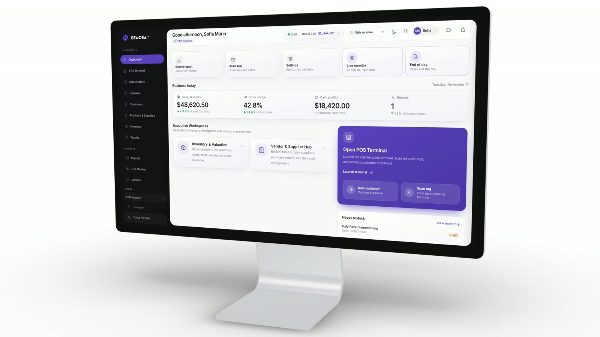
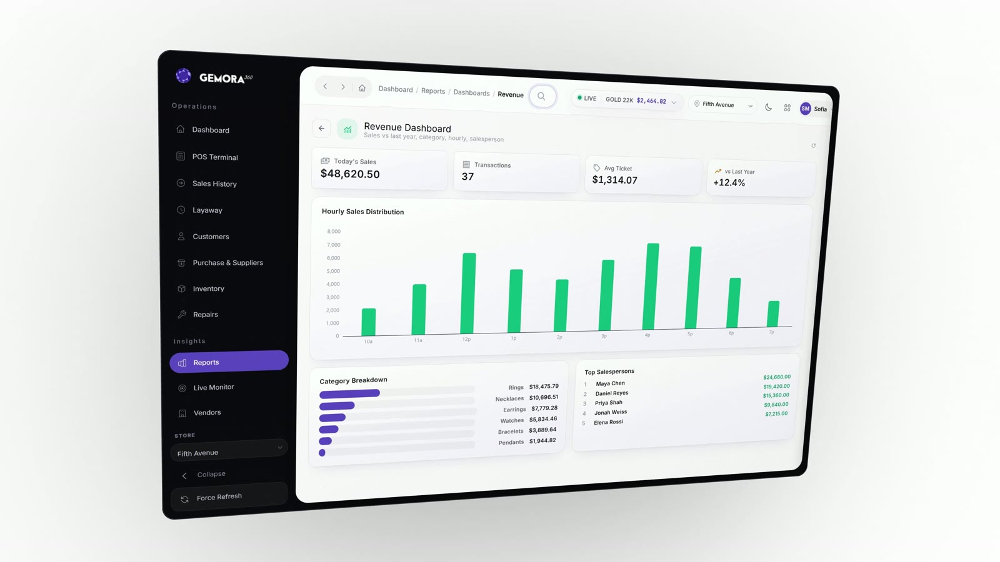
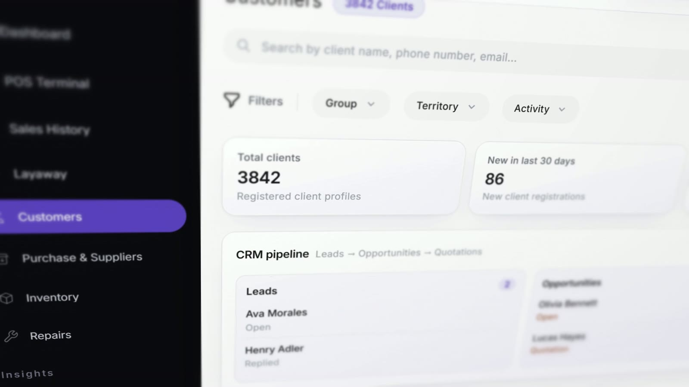
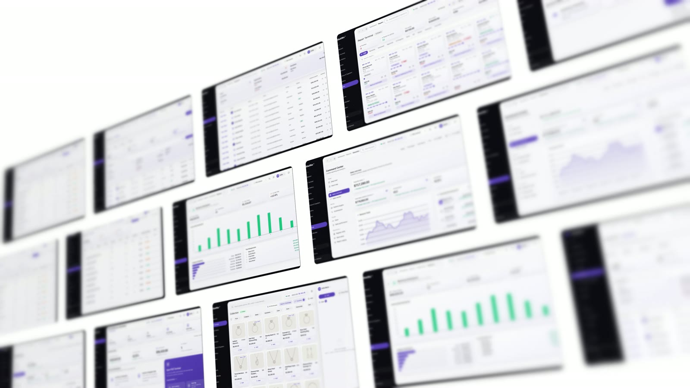
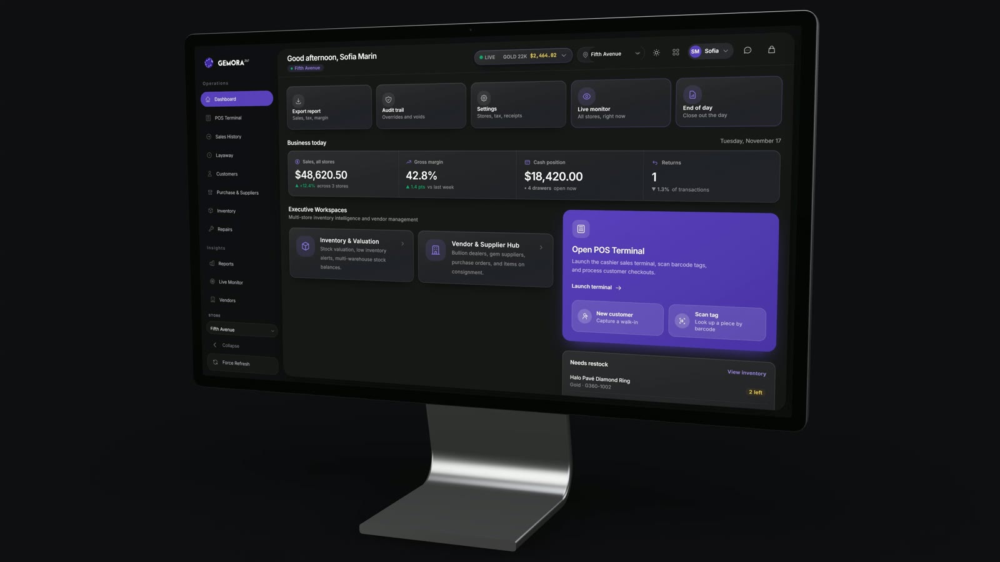
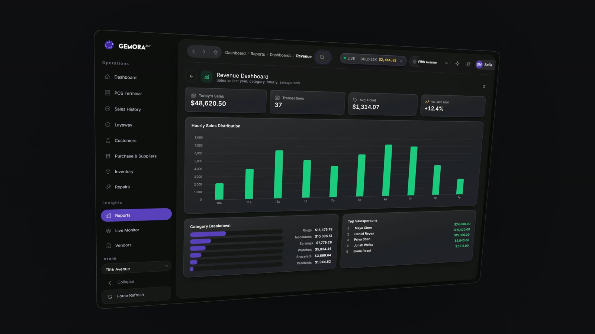

A stable application shell
The dark sidebar anchors the workspace while the main panel changes. An accent treatment marks the active module, helping preserve a sense of place across the dashboard, customer area and reports.
A jewelry retail workspace for the tasks inside the store: sales, inventory, customers and reporting.
The Gemora360 POS application interface in light and dark presentations.
Gemora360 is a jewelry retail POS application design. The interface brings the sales terminal, stock information, customer records and store reporting into one connected workspace. My role in this project is UI/UX design, with the application interface presented through the mockup video and selected views below.
The audience changes with the task. A salesperson needs a clear route into a transaction; a store manager needs an overview of activity; a person maintaining stock needs item-level information. The interface gives these activities a shared home without putting every tool on the dashboard.
This is a separate project from the Jewelry POS sales website. That website explains the product and its plans; this case study covers the workspace used inside the store.
The central design challenge is balancing a dense retail workspace with a clear next action. The dashboard needs to help someone orient themselves, while the detailed work belongs in focused modules.
The workspace supports several routes rather than forcing every visit through the same screen. These are the main task paths communicated by the interface:
The persistent sidebar is the connecting layer. It groups daily operations separately from insights, so a person can move from a high-level indicator to the relevant work area without learning a new navigation model each time.
The dark sidebar anchors the workspace while the main panel changes. An accent treatment marks the active module, helping preserve a sense of place across the dashboard, customer area and reports.
The POS entry is a prominent action area rather than another small item among the business metrics. Workspace shortcuts provide secondary routes into inventory and supplier tasks.
Large indicators establish the overview; supporting labels explain their context. Tables and charts then carry the denser detail. This keeps the page from treating every number as equally important.
The customer presentation combines a searchable record list with a pipeline view. It communicates both who the customer is and where a conversation or opportunity sits, using a consistent workspace structure.
These stills come from the project mockup videos. Each view highlights a different part of the application design; the video above shows the complete presentation.

A dashboard with business indicators, workspace shortcuts and a prominent route into the POS terminal.

Charts, summary figures and tabular information create a layered view of retail activity.

Customer records and a CRM pipeline sit within the same navigation frame.

The presentation brings the application modules together to show the breadth of the interface system.
The two presentations keep the same content structure. Backgrounds, surfaces and text contrast change while the placement of key actions remains familiar.

The same operational overview with darker surfaces and a consistent action hierarchy.

Reporting uses the same structure and chart hierarchy in the dark presentation.
This project demonstrates how dashboard design, task navigation, customer management and data presentation can share one visual system. The emphasis is on helping each screen communicate its purpose while preserving a familiar application structure.
The strongest connection is between the overview and the detailed workspaces: the dashboard introduces the business context, and the modules provide space for the task itself. Light and dark presentations carry that same structure across different surface treatments.